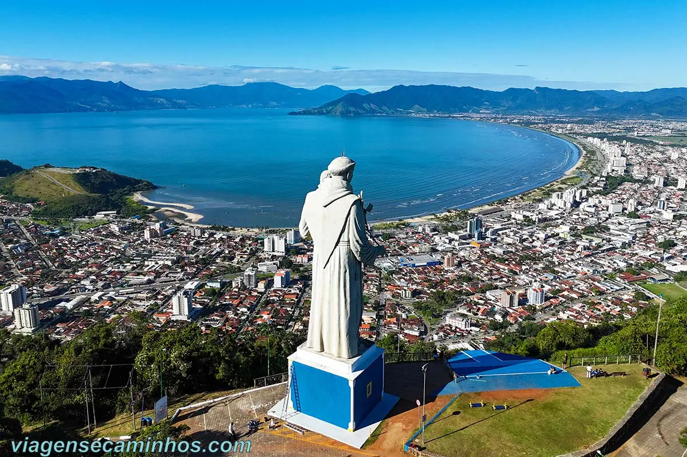

Caraguatatuba é um município brasileiro localizado no litoral do estado de São Paulo, conhecido por suas belas praias, belezas naturais e excelente infraestrutura turística.
Conhecida carinhosamente como a "Capital das Praias" do litoral norte paulista, Caraguatatuba encanta visitantes de todas as idades por unir perfeitamente o verde exuberante da Mata Atlântica com o azul cristalino do mar. Seu litoral se estende por quilômetros de praias que vão desde enseadas calmas e familiares até agitadas ondas propícias para o surfe.
Estrategicamente posicionada entre a Serra do Mar e o Oceano Atlântico, a cidade possui acesso facilitado pela moderna Rodovia dos Tamoios, sendo a porta de entrada para as belezas de toda a região norte do estado e vizinha de destinos como Ubatuba, São Sebastião e Ilhabela.
Fundada em 20 de abril de 1857, a cidade possui uma rica história ligada à pesca, ao turismo e à conexão entre o Vale do Paraíba e o mar através da Rodovia dos Tamoios.
Além do forte potencial turístico, Caraguatatuba oferece qualidade de vida, opções de lazer, comércio dinâmico e áreas verdes preservadas pela Serra do Mar.

Fonte: Viagens e Caminhos:Caraguatatuba
A cidade destaca-se por sua deslumbrante orla marítima revitalizada, ciclovias, eventos culturais ao ar
livre e por ser o principal destino de veraneio da região.Além de suas belezas naturais, Caraguatatuba conta com
uma excelente infraestrutura hoteleira, um polo gastronômico diversificado com pratos à base de frutos do mar
frescos e um calçadão à beira-mar totalmente revitalizado, ideal para caminhadas e passeios em família.